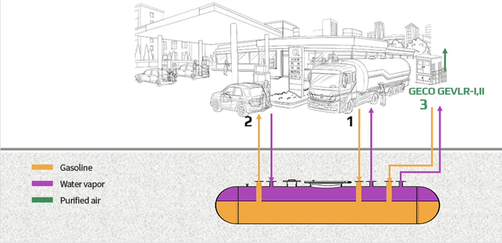
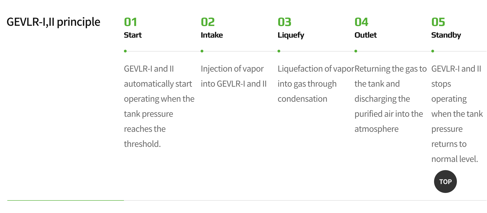
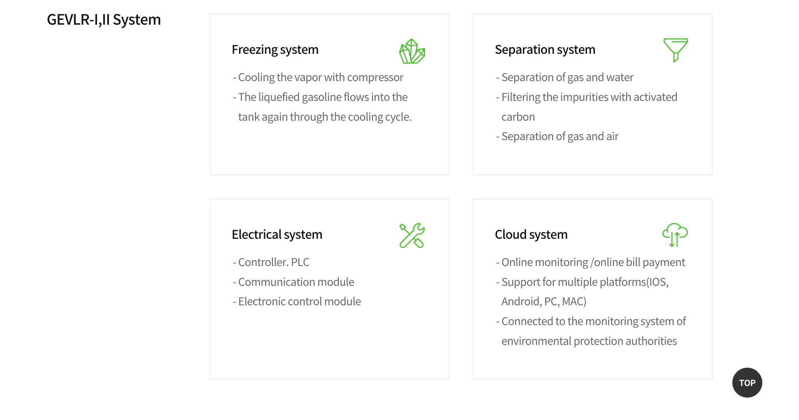
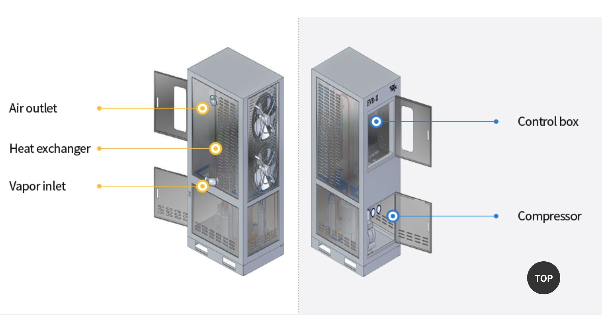
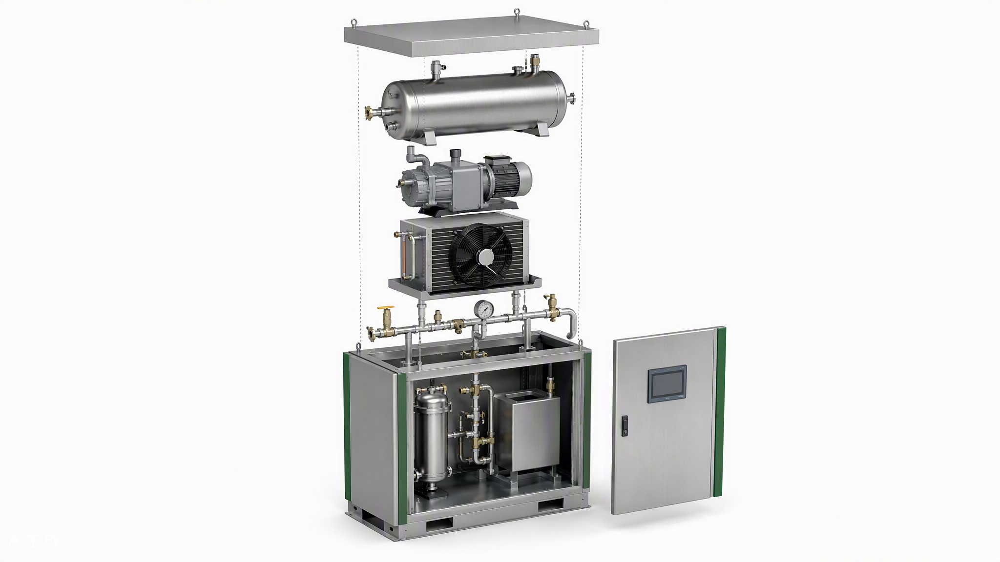

Démarrage
La machine démarre automatiquement lorsque la pression atteint le seuil défini.
La solution
Installée sur l'évent de la cuve, la GLRV II capte les vapeurs, les condense et restitue l'essence liquide.
01 · Installation
La GLRV II se raccorde au réseau d'évent du réservoir souterrain. Elle reçoit les vapeurs, renvoie le carburant liquéfié vers la cuve et rejette un air épuré.

02 · Cycle
La machine démarre automatiquement lorsque la pression atteint le seuil défini.
Les vapeurs sont aspirées vers l'unité.
Le refroidissement transforme les vapeurs en essence liquide.
Le carburant retourne dans la cuve et l'air épuré est évacué.
La machine s'arrête lorsque la pression redevient normale.

03 · Architecture
Le compresseur refroidit les vapeurs et le carburant liquéfié revient dans la cuve.
Séparation du gaz, de l'eau et de l'air avec filtration par charbon actif.
Automate PLC, communication et commande électronique pilotent le fonctionnement.
Supervision en ligne depuis plusieurs plateformes.

04 · Composants
Entrée des vapeurs, échangeur thermique, sortie d'air, coffret de commande et compresseur sont regroupés dans un caisson compact.

05 · Vue éclatée

HCTECH
initialisation